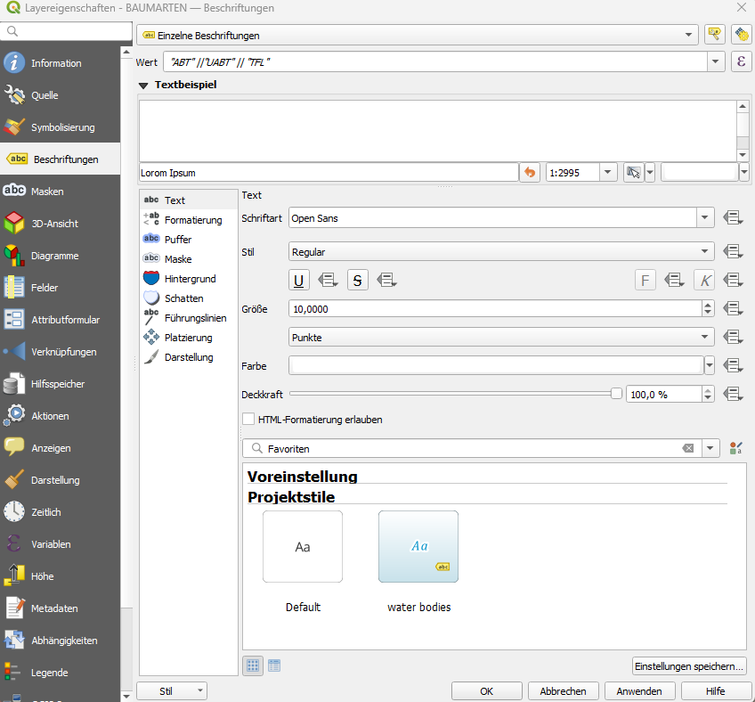
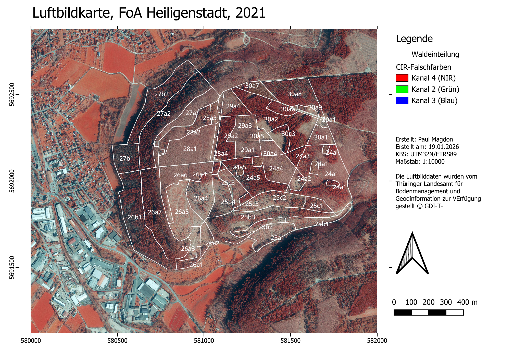
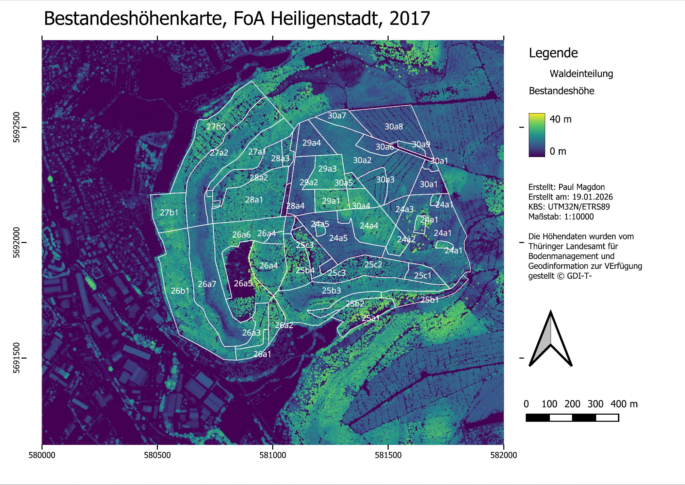
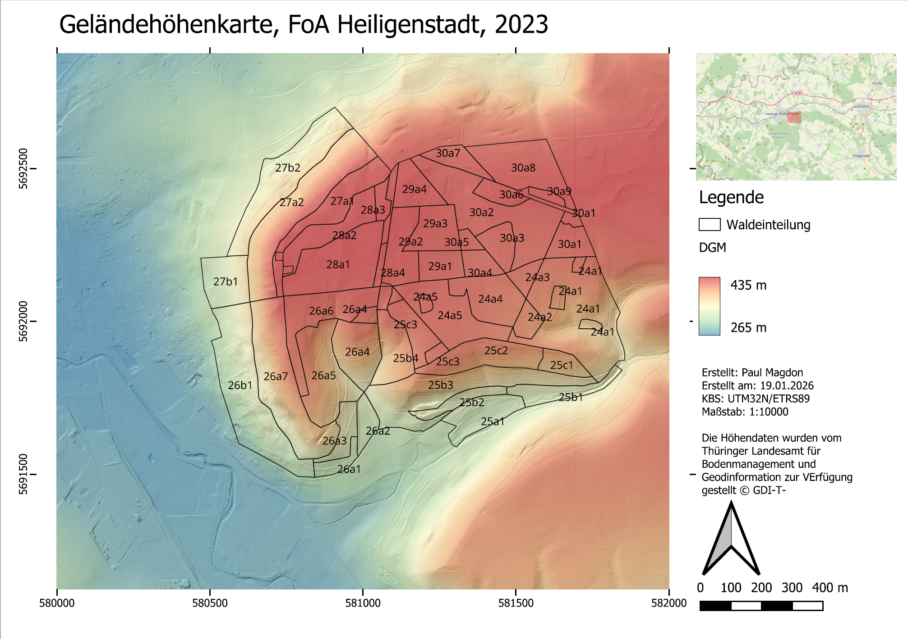

14 Lerneinheit 14: Erstellen von Kartenlayouts
In dieser Übung wird vorgestellt wie ansprechendes Kartenlayouts erstellen und als exportiert werden können. Das Kartenlayout soll alle wesentliche Kartenelemente enthalten. QGIS bietet hierzu sehr viele Optionen, die wir im Rahmen des Kurses nur anschneiden können. Eine detaillierte Beschreibung der unterschiedlichen Funktionen finden sie in der QGIS-Dokumentation:
https://docs.qgis.org/3.40/de/docs/user_manual/print_composer/index.html
14.1 Lernziele & Aufgabenstellung
Lernziele
Die Studierenden sollen:
Mithilfe der Layoutverwaltung Karten erstellen und verwalten können
Alle wichtigen Kartenelemente kennen und erstellen können
Unterschiedliche Daten Visualisierungstechniken einsetzen können
Aufgaben
Erstellen eines QGIS-Projektes inkl. Datendownload
Erstellen eine Luftbildkarte
Erstellen einer Bestandesshöhenkarte
Erstellen einer Geländehöhenkarte
14.2 Aufgabe 0: Anlegen eine neuen QGIS-Projektes und Kontrolle des Nutzerprofils
Folgen sie der Anleitung aus LE01 Kapitel 1.3 um eine neue Ordnerstruktur und ein neues QGIS-Projekt anzulegen. In der Übung bietet es sich an den Ordner “daten” weiter in die Unterordner “vektor” und “raster” zu unterteilen. Zusätzlich ist es für diese Übung sinnvoll einen Ordner “modelle” anzulegen. Prüfen sie außerdem ob Ihr Nutzerprofil korrekt geladen wurde und ob die OTB-Funktionen im Werkzeugkasten vorhanden sind. Sollte dies nicht der Fall sein stellen sie ihr gesichertes Nutzerprofil wieder her (siehe auch LE01 Kapitel 1.2.4).
14.3 Aufgabe 01: Download und Import der Geodaten
14.3.1 Luftbilddaten
Für die Übung verwenden wir Luftbilddaten des Thüringer Landesamts für Bodenmanagement und Geoinformation (TLBG) im FoA Heilligenstadt. Sie können ein entsprechend vorbereitetes Ortholuftbildmosaik unter folgendem Link herunterladen:
https://cloud.hawk.de/index.php/s/PJoEXMtfRsWgTeQ
Speichern sie die Daten unter “raster”.
14.3.2 ALS-basierte Höhendaten
Für die Übung verwenden wir außerdem Höhendaten des Thüringer Landesamts für Bodenmanagement und Geoinformation (TLBG). Diese Höhendaten wurden mit Hilfe eines Airborne Laser Scanners (ALS) erfasst. Für die Übung wurde das DOM bereits auf Basis des DGM zu einem nDOM normalisiert (siehe Kapitel 12.5.2).
1.) DGM: https://cloud.hawk.de/index.php/s/ZKnnD8WkYNcEfrk
2. )nDOM: https://cloud.hawk.de/index.php/s/EQQKHgrpwYZWApf
Speichern sie die Daten unter “raster”.
14.3.3 Vektordaten
Der Landesbetrieb ThüringenForst stellt umfangreiche forstliche Geodaten kostenfrei zur Verfügung. Unter anderem werden Daten zur Waldeinteilung und Bestockung zur Verfügung gestellt, die wir in der Übung verwenden wollen. Diese Daten können im ESRI-Shapefile Format unter folgendem Link für ganz Thüringen heruntergeladen werden:
Entpacken sie die Dateien dieses shapefiles in den Ordner “../daten/vektor/” und fügen sie die Waldeinteilung in das QGIS-Projekt ein.
Für die Übung beschränken wir uns auf die Auswertung folgende Abteilungen des FoA Heiligenstadt (55):
Abt. 24, 25, 26, 27, 28,29, und 30.
Filtern sie dazu den Datensatz wie in Übung Kapitel 5.4 vorgestellt.
Anschließen wählen sie eine geeignete Symbolisierung für die Außengrenzen der Bestände. Außerdem sollen die Bestände nach dem Schema “AbtUabtTF” (z.B. 30a1) beschriftet werden. Dazu können sie unter Eigenschaften->Symbolisierung->Beschriftung->Einzelne Beschriftungen wählen. Da es bisher kein Feld in der Attributabelle des Datensatzes gibt das die Beschriftung enthält müssen wir einen Feldausdruck verwenden. Dazu unter “Wert” auf das Summenzeichen gehen und folgenden Ausdruck hinterlegen:
“ABT” ||“UABT” || “TFL”

14.4 Aufgabe 02: Vorbereitung der Rasterkarten
Passen sie nun die Darstellung der drei Rastermosaike wie folgt an:
1.) Das DGM soll als Schummerungsbild dargestellt werden. Für eine attraktivere Darstellung können sie das Schummerungsbild auch mit einem Pseudofarbkanal überlagern. Erstellen sie dazu zunächst eine Kopie des DGM-Layers. Nutzen sie für diese Kopie eine Einkanalpseudofarbendarstellung mit einer geeigneten Farbskala (z.B. spektral invertiert). Stellen sie hier unter Transparanz die Globaledeckkraft auf 50%. Dadurch wird dieses Layer halbtransparent dargestellt und das darunterliegende Schummerungsbild zusätzlich sichtbar.
2.) Dasn nDOM soll als Einkanalpseudofarbe mit der Farbpalette “viridis” dargestellt werden. Stellen sie sicher das der Wertebereich der Legende bei 0 startet und möglichst in geraden Schritten (z.B. 5m ) einteilt.
3.) Das DOP soll als CIR-Falschfarbenbild dargestellt sein.
14.5 Aufgabe 03: Erstellen eines Kartenlayouts für eine Luftbildkarte
In einem QGIS Projekt können mehrere Karten erstellt und gespeichert werden. Zur Verwaltung der verschiedenen Karten wird der Kartenlayout-Manager verwendet. Sie finden diesen im Menü unter Datei. Hier können sie ein neues Kartenlayout „Luftbild“ anlegen.
Nachdem sie ein Kartenlayout im Manager angelegt haben öffnet sich ein neues Fenster mit dem noch leeren Kartenlayout. Um ein erstes Layout zu erstellen gehen wir folgende Schritte durch:
1.) Hinzufügen eines Kartenfelds.
Dazu wählen sie links das Werkzeug “Karte hinzufügen” und ziehen anschließend in ihrem Layout ein Kartenfeld auf. QGIS stellt danach automatisch die Layer aus dem Hauptfenster dar.
2.) Hinzufügen eines Titels
Dazu wählen sie links das Werkzeug “Beschriftung hinzufügen” und ziehen anschließend ein Textfeld oberhalb ihrer Karte auf. Geben sie dann im Feld rechts unter „Beschriftung“ einen sinnvollen Titel (z.b. Luftbildkarte FoA Heiligenstadt) ein und wählen sie eine passende Schriftgröße aus.
3.) Hinzufügen einer Legende
Dazu wählen sie links das Werkzeug “Legende hinzufügen” aus und ziehen anschließend ein Legendenfeld rechts neben ihren Kartenfeld auf. QGIS übernimmt für die Legende dann automatisch die Symbolisierung aller Layer des Projektes. Wenn sie rechts unter Legendenelemente die Funktion „Automatisch aktualisieren“ entfernen, können sie Einträge manuell hinzufügen und entfernen.
4.) Hinzufügen eine Nordpfeils
Dazu wählen sie links das Werkzeug “Nordpfeil hinzufügen” und ziehen anschließend ein Fenster für den Nordpfeil auf.
5.) Koordinatengitter hinzufügen
Um ein Koordinatengitter hinzuzufügen selektieren sie zunächst das Kartenfenster in dem sie darauf klicken. Anschließend öffnen sie die Option „Gitter“, die ihnen im rechten Teil unter den Haupteigenschaften des Kartenfelds angezeigt wird. Über das grüne Plus Symbol legen sie ein neues Gitter an. Anschließend wählen sie dieses Gitter aus, und klicken auf „Gitter ändern“. Hier ändern wir folgende Optionen:
Gittertype: „Nur Rahmen und Beschriftungen“
Intervall: X=500m, Y=500m
Rahmenstil: „Äußere Markierung“
Koordinaten zeichnen: „ja“
Koordinaten nur “links” und “unten”. “Oben und”rechts” deaktivieren
Koordinatengenauigkeit: 0
6.) Maßstab
Fügen sie ein graphischen Maßstabsbalken hinzu. Dazu wählen sie links das Werkzeug “Maßstab hinzufügen” und ziehen anschließend ein Fenster für den Maßstab auf. Über die Eigenschaften dieses Elements können sie z.B. die Anzahl an Segmenten steuern.
7.) Kartenfeld
Sie sollten der Karte noch einige weitere Metadaten hinzufügen. Dazu legen sie, wie beim Titel, ein neues Textfeld an und ergänzen hier ihren Namen und das Koordinatenreferenzsystem.

14.6 Aufgabe 04: Erstellen eines Kartenlayouts für eine Bestandeshöhenkarte
Im nächsten Schritt soll eine Bestandeshöhenkarte erstellt werden. Damit nicht alle Layout-Elemente neu erstellt werden müssen, bietet es sich an das bestehende Layout als Vorlage zu verwenden. Dazu kann unter Projekte -> Layout-Verwaltung das bestehende Layout dupliziert und eines neues Layout mit dem Namen “Bestandeshöhenkarte” angelegt werden.
Im neuen Layout müssen nun Titel, Legende und Kartenfeld entsprechend angepasst werden.

14.7 Aufgabe 05: Erstellen eines Kartenlayouts für eine Geländemodellkarte
Als dritte Karte soll eine Karte mit dem Geländemodell erstellt werden. Dazu soll eine Schummerungskarte mit einer Pseudofarbkarte überblendet werden. Außerdem soll eine zweites Kartenfeld mit einer Übersichtkarte hinzugefügt werden. Die Übersichtskarte soll den Maßstab 1:500000 haben und Openstreetmap Daten darstellen. Außerdem soll ein Indikator den Ausschnitt der Hautkarte anzeigen.
